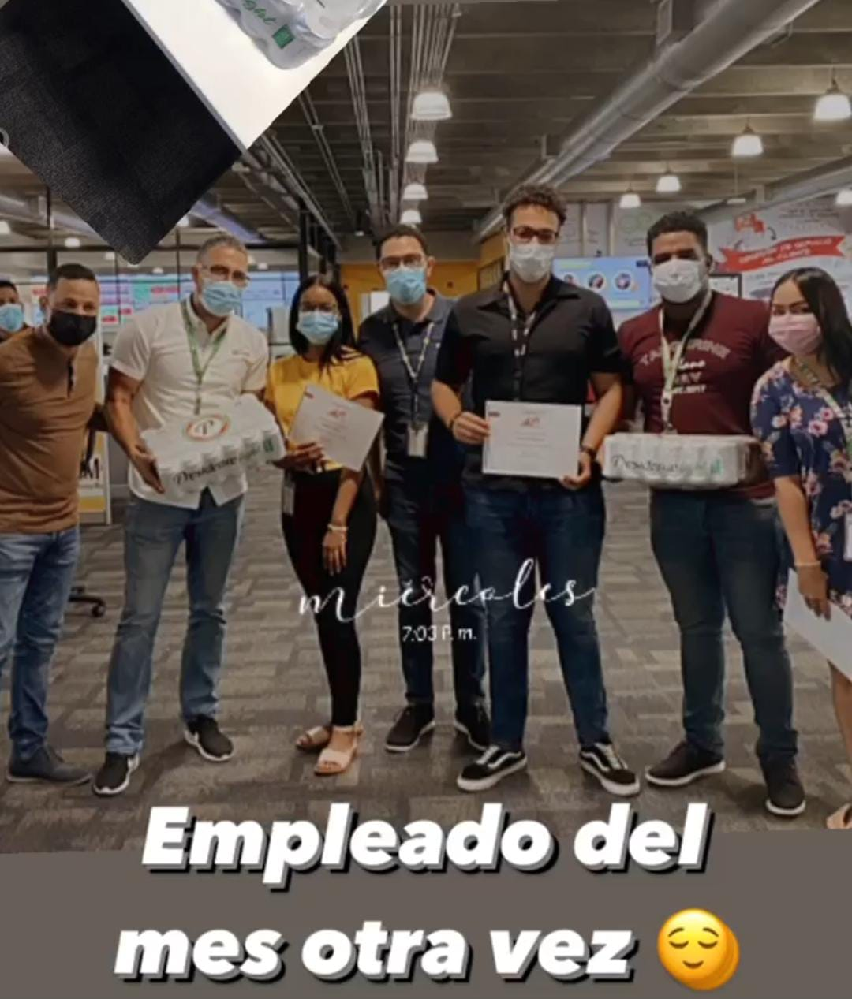
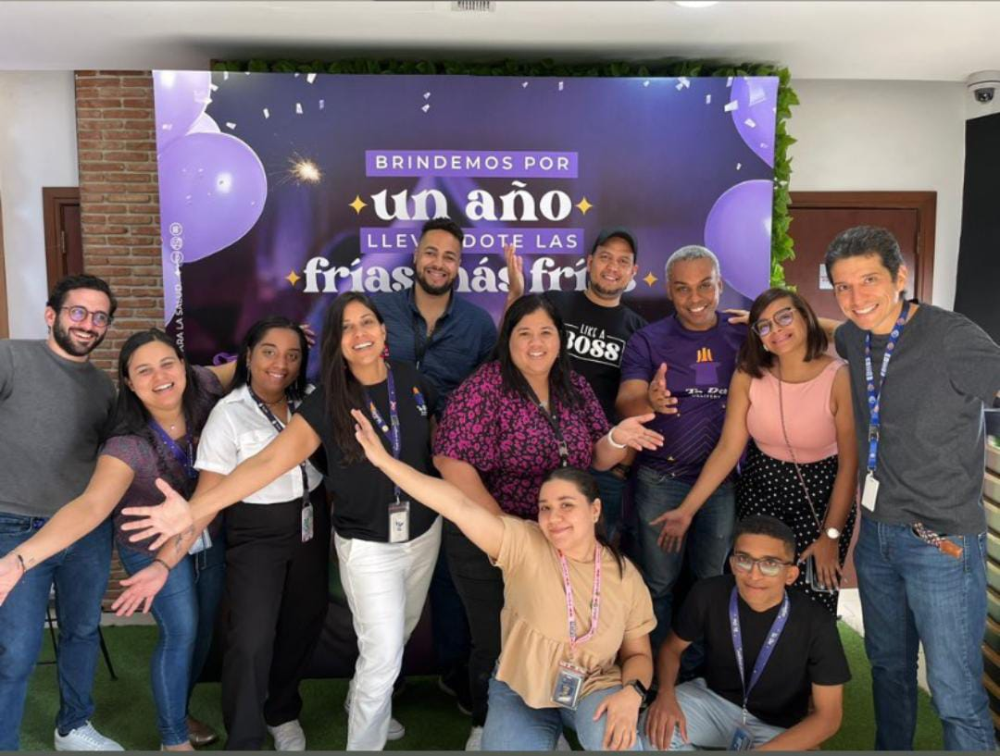

Mi primmer trabajo fue como agente de call center en la cerveceria nacional dominicana
desempeñandome por varios meses como el mejor empleado hasta ser ascendido a supervisor

Mi primer trabajo como desarrollador en la misma empresa pero trabajando en el APP de TaDa Delivery
la cual era colmapp, aqui realice el apartado web y mantenimiento visual del app.
Actualmente me encuentro trabajando en OPRET (oficina para el reordenamiento de transporte)
como programador Frond End Junior, por el momento no he comenzado algun proyecto, antes quiero ganar la experiencia
necesaria.